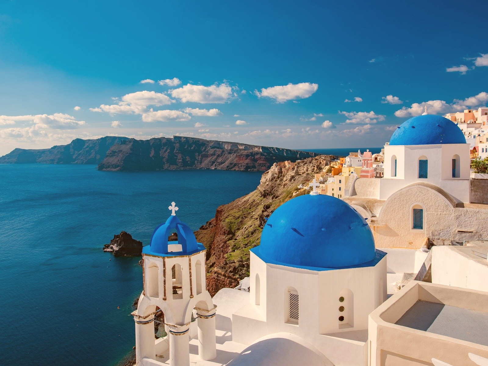

Asos

Crete

Athens

Santorini
Daktyla is a leavened 'country' or 'village' bread from Greece,but also popular in Cyprus and Turkey. It has a segmented shape resembling fingers of bread, which give it its name of 'finger bread'(Δάχτυλα, Daktyla in Greek means "fingers"[1]), which is made by making deep slashes in a loaf before baking, or making a row of rolls of dough and allowing them to become attached to each other at proving stage. It is traditionally made from a 'country' flour, which is a mix of wheat flours and fine cornmeal, which gives it a light yellow colour, and is topped with sesame and nigella seeds. Some recipes also include nigella seeds in the dough.
Greek salad is made with pieces of tomatoes, sliced cucumbers, onion, feta cheese (usually served as a slice on top of the other ingredients), and olives (usually Kalamata olives), typically seasoned with salt and Greek mountain oregano, and dressed with olive oil. Common additions include green bell pepper slices, figs, or caper berries (especially in the Dodecanese). Greek salad is often imagined as a farmer's breakfast or lunch, as its ingredients resemble those that a Greek farmer might have on hand.
Lokma (Turkish), also known as luqma (Arabic: لقمة), loukoumádes (Greek: λουκουμάδες), and other names in other languages, are pastries made of leavened and deep fried dough, soaked in syrup or honey, sometimes coated with cinnamon or other ingredients.[1] The dish was described as early as the 13th century by al-Baghdadi as luqmat al-qādi (لقمة القاضي), "judge's morsels".
Asos
Crete
Athens
Santorini
"Greece was a muse. It inspired creativity in magical ways that I can’t even begin to understand or explain."
-Joe Bonamassa